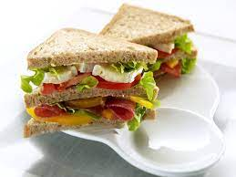

Slammin Sammich

Description
This is a slammin' recipe for a slammin' sammich that'll have you...yeah.
This sammich has all the right shit: mayo, spices, spinach and arugula, sliced deli turkey, provolone cheese, bacon, and 9 seed multi-grain bread.
Ingredients:
- Bread
- Sliced turkey
- Bacon
- Sliced provolone
- Spinach
- Arugula
- Mayo
- Oregano
- Black pepper
Steps:
- Cook some bacon. While it's cooking, prep the rest of the sandwich.
- Lay your bread out and spread some mayo on both slices.
- Sprinkle some oregano and black pepper on both slices.
- Put some spinach and arugula on there and then slap down some sliced turkey and a slice or two of provolone.
- When the bacon is done, rest on a paper towel and cover with another to get all the grease. Top off the sandwich, close the sandwich with the other slice, cut it in half and enjoy a good sandwich.